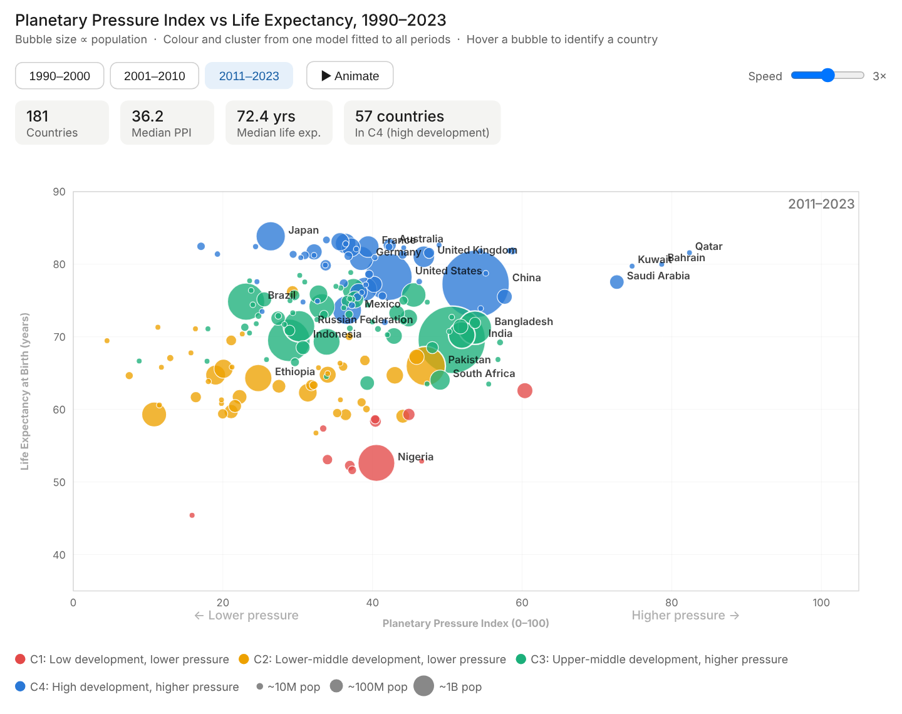
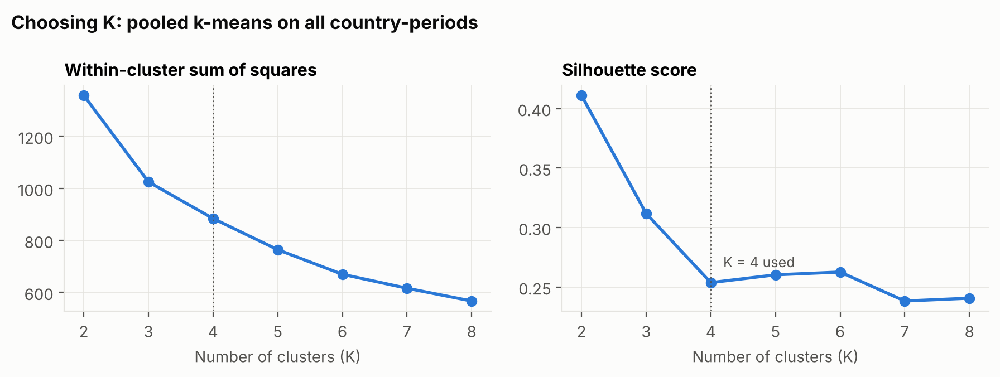

Development at what cost?
The thesis begins with a question: do countries with better living conditions also place more pressure on the planet?
A world-level study of planetary pressure and development, 1990–2023
Undergraduate thesis · TISS · Dr. Kamal Kumar Murari
World · 2011–2023 · Thesis period averages
India · 2011–2023 · Life expectancy: 69.58 years · Upper-middle development, higher pressure
| Time | Selected country | Comparison | Observed geography mean |
|---|---|---|---|
| 1990–2000 | 60.65 | Not available | 65.2 |
| 2001–2010 | 65.16 | Not available | 68.31 |
| 2011–2023 | 69.58 | Not available | 71.4 |
| Country | Subregion | Selected indicator | Development profile |
|---|---|---|---|
| Afghanistan | Southern Asia | 62.59 | Low development, lower pressure |
| Albania | Southern Europe | 78.47 | Upper-middle development, higher pressure |
| Algeria | Northern Africa | 75.14 | Upper-middle development, higher pressure |
| Angola | Middle Africa | 61.73 | Lower-middle development, lower pressure |
| Argentina | South America | 76.15 | High development, higher pressure |
| Armenia | Western Asia | 74.78 | Upper-middle development, higher pressure |
| Australia | Australia and New Zealand | 82.63 | High development, higher pressure |
| Austria | Western Europe | 81.37 | High development, higher pressure |
| Azerbaijan | Western Asia | 72.22 | Upper-middle development, higher pressure |
| Bahamas, The | Caribbean | 73.49 | High development, higher pressure |
| Bahrain | Western Asia | 80 | High development, higher pressure |
| Bangladesh | Southern Asia | 71.26 | Upper-middle development, higher pressure |
| Barbados | Caribbean | 76.11 | High development, higher pressure |
| Belarus | Eastern Europe | 73.11 | Upper-middle development, higher pressure |
| Belgium | Western Europe | 81.31 | High development, higher pressure |
| Belize | Central America | 71.81 | Upper-middle development, higher pressure |
| Benin | Western Africa | 59.5 | Lower-middle development, lower pressure |
| Bhutan | Southern Asia | 71.32 | Lower-middle development, lower pressure |
| Bolivia | South America | 66.51 | Upper-middle development, higher pressure |
| Bosnia and Herzegovina | Southern Europe | 76.95 | Upper-middle development, higher pressure |
| Botswana | Southern Africa | 64.53 | Upper-middle development, higher pressure |
| Brazil | South America | 74.85 | Upper-middle development, higher pressure |
| Brunei Darussalam | South-eastern Asia | 74.8 | High development, higher pressure |
| Bulgaria | Eastern Europe | 74.35 | High development, higher pressure |
| Burkina Faso | Western Africa | 59.28 | Lower-middle development, lower pressure |
| Burundi | Eastern Africa | 60.98 | Lower-middle development, lower pressure |
| Cabo Verde | Western Africa | 74.4 | Upper-middle development, higher pressure |
| Cambodia | South-eastern Asia | 69.51 | Lower-middle development, lower pressure |
| Cameroon | Middle Africa | 60.47 | Lower-middle development, lower pressure |
| Canada | Northern America | 81.71 | High development, higher pressure |
| Central African Republic | Middle Africa | 45.41 | Low development, lower pressure |
| Chad | Middle Africa | 52.26 | Low development, lower pressure |
| Chile | South America | 79.85 | High development, higher pressure |
| China | Eastern Asia | 77.28 | High development, higher pressure |
| Colombia | South America | 75.87 | Upper-middle development, higher pressure |
| Comoros | Eastern Africa | 64.94 | Lower-middle development, lower pressure |
| Congo, Dem. Rep. | Middle Africa | 59.31 | Lower-middle development, lower pressure |
| Congo, Rep. | Middle Africa | 63.85 | Lower-middle development, lower pressure |
| Costa Rica | Central America | 79.89 | High development, higher pressure |
| Cote d'Ivoire | Western Africa | 59.06 | Lower-middle development, lower pressure |
| Croatia | Southern Europe | 77.56 | Upper-middle development, higher pressure |
| Cuba | Caribbean | 77.37 | High development, higher pressure |
| Cyprus | Western Asia | 81.24 | High development, higher pressure |
| Czechia | Eastern Europe | 78.62 | High development, higher pressure |
| Denmark | Northern Europe | 80.93 | High development, higher pressure |
| Djibouti | Eastern Africa | 63.5 | Upper-middle development, higher pressure |
| Dominican Republic | Caribbean | 73.06 | Upper-middle development, higher pressure |
| Ecuador | South America | 75.73 | Upper-middle development, higher pressure |
| Egypt, Arab Rep. | Northern Africa | 70.24 | Upper-middle development, higher pressure |
| El Salvador | Central America | 71.17 | Upper-middle development, higher pressure |
| Equatorial Guinea | Middle Africa | 61.32 | Lower-middle development, lower pressure |
| Eritrea | Eastern Africa | 66.37 | Lower-middle development, lower pressure |
| Estonia | Northern Europe | 77.6 | High development, higher pressure |
| Eswatini | Southern Africa | 56.76 | Lower-middle development, lower pressure |
| Ethiopia | Eastern Africa | 64.32 | Lower-middle development, lower pressure |
| Fiji | Melanesia | 66.64 | Upper-middle development, higher pressure |
| Finland | Northern Europe | 81.4 | High development, higher pressure |
| France | Western Europe | 82.43 | High development, higher pressure |
| Gabon | Middle Africa | 66.67 | Upper-middle development, higher pressure |
| Gambia, The | Western Africa | 63.52 | Upper-middle development, higher pressure |
| Georgia | Western Asia | 73.31 | Upper-middle development, higher pressure |
| Germany | Western Europe | 80.8 | High development, higher pressure |
| Ghana | Western Africa | 63.64 | Upper-middle development, higher pressure |
| Greece | Southern Europe | 81.14 | High development, higher pressure |
| Grenada | Caribbean | 74.98 | Upper-middle development, higher pressure |
| Guatemala | Central America | 70.87 | Upper-middle development, higher pressure |
| Guinea | Western Africa | 58.64 | Low development, lower pressure |
| Guinea-Bissau | Western Africa | 60.82 | Lower-middle development, lower pressure |
| Guyana | South America | 67.79 | Lower-middle development, lower pressure |
| Haiti | Caribbean | 63.35 | Lower-middle development, lower pressure |
| Honduras | Central America | 71.32 | Upper-middle development, higher pressure |
| Hungary | Eastern Europe | 75.63 | High development, higher pressure |
| Iceland | Northern Europe | 82.65 | High development, higher pressure |
| India | Southern Asia | 69.58 | Upper-middle development, higher pressure |
| Indonesia | South-eastern Asia | 69.52 | Upper-middle development, higher pressure |
| Iran, Islamic Rep. | Southern Asia | 75.77 | Upper-middle development, higher pressure |
| Iraq | Western Asia | 70.12 | Upper-middle development, higher pressure |
| Ireland | Northern Europe | 81.86 | High development, higher pressure |
| Israel | Western Asia | 82.4 | High development, higher pressure |
| Italy | Southern Europe | 82.85 | High development, higher pressure |
| Jamaica | Caribbean | 71.71 | Upper-middle development, higher pressure |
| Japan | Eastern Asia | 83.85 | High development, higher pressure |
| Jordan | Western Asia | 75.51 | High development, higher pressure |
| Kazakhstan | Central Asia | 71.92 | Upper-middle development, higher pressure |
| Kenya | Eastern Africa | 62.3 | Lower-middle development, lower pressure |
| Kiribati | Micronesia | 65.75 | Lower-middle development, lower pressure |
| Korea, Rep. | Eastern Asia | 82.32 | High development, higher pressure |
| Kuwait | Western Asia | 79.74 | High development, higher pressure |
| Kyrgyz Republic | Central Asia | 71.08 | Upper-middle development, higher pressure |
| Lao PDR | South-eastern Asia | 67.08 | Lower-middle development, lower pressure |
| Latvia | Northern Europe | 74.42 | Upper-middle development, higher pressure |
| Lebanon | Western Asia | 77.61 | High development, higher pressure |
| Lesotho | Southern Africa | 52.89 | Low development, lower pressure |
| Liberia | Western Africa | 60.6 | Lower-middle development, lower pressure |
| Libya | Northern Africa | 72.02 | High development, higher pressure |
| Lithuania | Northern Europe | 74.92 | High development, higher pressure |
| Luxembourg | Western Europe | 82.27 | High development, higher pressure |
| Madagascar | Eastern Africa | 63.19 | Lower-middle development, lower pressure |
| Malawi | Eastern Africa | 63.34 | Lower-middle development, lower pressure |
| Malaysia | South-eastern Asia | 75.52 | High development, higher pressure |
| Maldives | Southern Asia | 78.86 | Upper-middle development, higher pressure |
| Mali | Western Africa | 58.37 | Low development, lower pressure |
| Malta | Southern Europe | 82.09 | High development, higher pressure |
| Mauritania | Western Africa | 66.88 | Upper-middle development, higher pressure |
| Mauritius | Eastern Africa | 74 | Upper-middle development, higher pressure |
| Mexico | Central America | 73.68 | High development, higher pressure |
| Micronesia, Fed. Sts. | Micronesia | 65.81 | Lower-middle development, lower pressure |
| Moldova | Eastern Europe | 70.29 | Upper-middle development, higher pressure |
| Mongolia | Eastern Asia | 70.75 | Upper-middle development, higher pressure |
| Montenegro | Southern Europe | 76.4 | Upper-middle development, higher pressure |
| Morocco | Northern Africa | 73.27 | Upper-middle development, higher pressure |
| Mozambique | Eastern Africa | 59.7 | Lower-middle development, lower pressure |
| Myanmar | South-eastern Asia | 65.6 | Lower-middle development, lower pressure |
| Namibia | Southern Africa | 61.33 | Lower-middle development, lower pressure |
| Nepal | Southern Asia | 68.52 | Upper-middle development, higher pressure |
| Netherlands | Western Europe | 81.56 | High development, higher pressure |
| New Zealand | Australia and New Zealand | 81.83 | High development, higher pressure |
| Nicaragua | Central America | 72.89 | Upper-middle development, higher pressure |
| Niger | Western Africa | 59.31 | Low development, lower pressure |
| Nigeria | Western Africa | 52.63 | Low development, lower pressure |
| North Macedonia | Southern Europe | 75.25 | Upper-middle development, higher pressure |
| Norway | Northern Europe | 82.43 | High development, higher pressure |
| Oman | Western Asia | 78.75 | High development, higher pressure |
| Pakistan | Southern Asia | 65.97 | Lower-middle development, lower pressure |
| Panama | Central America | 77.72 | Upper-middle development, higher pressure |
| Papua New Guinea | Melanesia | 64.66 | Lower-middle development, lower pressure |
| Paraguay | South America | 72.87 | Upper-middle development, higher pressure |
| Peru | South America | 75.16 | Upper-middle development, higher pressure |
| Philippines | South-eastern Asia | 69.33 | Upper-middle development, higher pressure |
| Poland | Eastern Europe | 77.23 | High development, higher pressure |
| Portugal | Southern Europe | 81.23 | High development, higher pressure |
| Qatar | Western Asia | 81.59 | High development, higher pressure |
| Romania | Eastern Europe | 74.92 | Upper-middle development, higher pressure |
| Russian Federation | Eastern Europe | 71.47 | Upper-middle development, higher pressure |
| Rwanda | Eastern Africa | 65.91 | Lower-middle development, lower pressure |
| Samoa | Polynesia | 71.11 | Lower-middle development, lower pressure |
| Sao Tome and Principe | Middle Africa | 66.87 | Upper-middle development, higher pressure |
| Saudi Arabia | Western Asia | 77.55 | High development, higher pressure |
| Senegal | Western Africa | 66.75 | Lower-middle development, lower pressure |
| Serbia | Southern Europe | 75.15 | Upper-middle development, higher pressure |
| Sierra Leone | Western Africa | 57.38 | Low development, lower pressure |
| Singapore | South-eastern Asia | 82.81 | High development, higher pressure |
| Slovak Republic | Eastern Europe | 76.74 | Upper-middle development, higher pressure |
| Slovenia | Southern Europe | 80.91 | High development, higher pressure |
| Solomon Islands | Melanesia | 69.47 | Lower-middle development, lower pressure |
| Somalia, Fed. Rep. | Eastern Africa | 53.09 | Low development, lower pressure |
| South Africa | Southern Africa | 64.05 | Upper-middle development, higher pressure |
| South Sudan | Eastern Africa | 51.63 | Low development, lower pressure |
| Spain | Southern Europe | 83.1 | High development, higher pressure |
| Sri Lanka | Southern Asia | 76.21 | Lower-middle development, lower pressure |
| St. Lucia | Caribbean | 72.38 | Upper-middle development, higher pressure |
| St. Vincent and the Grenadines | Caribbean | 70.53 | Upper-middle development, higher pressure |
| Sudan | Northern Africa | 64.7 | Lower-middle development, lower pressure |
| Suriname | South America | 71.11 | Upper-middle development, higher pressure |
| Sweden | Northern Europe | 82.47 | High development, higher pressure |
| Switzerland | Western Europe | 83.35 | High development, higher pressure |
| Syrian Arab Republic | Western Asia | 68.52 | Upper-middle development, higher pressure |
| Tajikistan | Central Asia | 70.04 | Lower-middle development, lower pressure |
| Tanzania | Eastern Africa | 64.74 | Lower-middle development, lower pressure |
| Thailand | South-eastern Asia | 76.5 | Upper-middle development, higher pressure |
| Timor-Leste | South-eastern Asia | 65.84 | Lower-middle development, lower pressure |
| Togo | Western Africa | 60.06 | Lower-middle development, lower pressure |
| Tonga | Polynesia | 72.06 | Upper-middle development, higher pressure |
| Trinidad and Tobago | Caribbean | 72.72 | Upper-middle development, higher pressure |
| Tunisia | Northern Africa | 75 | Upper-middle development, higher pressure |
| Turkiye | Western Asia | 76.57 | High development, higher pressure |
| Turkmenistan | Central Asia | 69.23 | Upper-middle development, higher pressure |
| Uganda | Eastern Africa | 64.78 | Lower-middle development, lower pressure |
| Ukraine | Eastern Europe | 72.59 | Upper-middle development, higher pressure |
| United Arab Emirates | Western Asia | 81.84 | High development, higher pressure |
| United Kingdom | Northern Europe | 81.03 | High development, higher pressure |
| United States | Northern America | 78.25 | High development, higher pressure |
| Uruguay | South America | 77.17 | High development, higher pressure |
| Uzbekistan | Central Asia | 71.43 | Upper-middle development, higher pressure |
| Vanuatu | Melanesia | 70.4 | Lower-middle development, lower pressure |
| Venezuela, RB | South America | 72.57 | Upper-middle development, higher pressure |
| Viet Nam | South-eastern Asia | 74.16 | Upper-middle development, higher pressure |
| West Bank and Gaza | Western Asia | 73.91 | High development, higher pressure |
| Yemen, Rep. | Western Asia | 67.24 | Lower-middle development, lower pressure |
| Zambia | Eastern Africa | 61.69 | Lower-middle development, lower pressure |
| Zimbabwe | Eastern Africa | 59.39 | Lower-middle development, lower pressure |
181 observed values of 181 records in this selection. Missing values are excluded, never filled. Profile filters apply to each period separately.
Each point is one country-period average. Colour identifies the development profile. Equal-sized markers treat countries equally.
Study periods use original thesis results; annual views use source indicators, not annual PPI or annual profiles. Missing observations are excluded. Means are unweighted and may reflect changing coverage. North America includes Caribbean and Central America; Oceania includes Australia, New Zealand and Pacific subregions. GDP is in current US dollars.
Original thesis dataset ↗ · World Bank, FAOSTAT, WHO, ILO and UNDP.
The thesis begins with a question: do countries with better living conditions also place more pressure on the planet?
The Planetary Pressure Index (PPI) is a constructed composite of six selected environmental-pressure indicators. Higher values mean more pressure relative to other countries in the sample. One common scale allows comparison across three periods from 1990 to 2023.
Countries are grouped into exploratory profiles using pressure, income, health, and urbanisation. Their movements and associations show patterns—not proof that one factor causes another.
The link between pressure and life expectancy weakens over time. Correlation measures how closely two quantities move together.
Average pressure stays roughly flat in 1990–2000, 2001–2010, and 2011–2023.
The four groups overlap. A silhouette score of 0.25 indicates that these are broad patterns, not sharply separated categories.
These are associations, not causal effects. Version 2.0 corrects the original thesis analysis: a sovereign-state sample matched by ISO3 code, period labels aligned with the code, one pooled 0–100 PPI scale, one pooled clustering model with logged GDP, and a log-GDP regression matching its label. Each change is documented in the repository.
Planetary boundaries describe environmental limits within which human activity can operate. This framework motivates the study. The PPI is a researcher-constructed composite that summarises six selected environmental-pressure indicators; it is an exploratory, comparative proxy, not a direct measurement of the nine planetary boundaries or of whether a country has crossed a specific threshold. Its 0–100 scale is not the percentage of a boundary crossed.
The sample includes 182 countries drawn from UN member states and the State of Palestine, retaining countries with a mean population of at least 100,000. Annual observations from 1990–2023 are summarised into three periods: 1990–2000, 2001–2010 and 2011–2023. Period averages reveal broad patterns; they do not describe every change within a decade.
More developed profiles tend to have longer lives, higher incomes and greater urbanisation, alongside higher planetary pressure. The association weakens over time, but this alone is not evidence that development has become independent of environmental pressure.
| Period | Sample | With PPI | Grouped | Mean PPI | Median PPI |
|---|---|---|---|---|---|
| 1990–2000 | 182 | 177 | 176 | 35.2 | 36.4 |
| 2001–2010 | 182 | 180 | 179 | 35.0 | 35.2 |
| 2011–2023 | 182 | 182 | 181 | 35.6 | 36.1 |
The sample remains 182 countries. Fewer countries appear in the explorer because grouping requires the development indicators as well as the PPI. A missing group is not a zero value.
| Profile | PPI | Life expectancy (years) | Infant mortality / 1,000 | Urban population (%) |
|---|---|---|---|---|
| C1 · Low development, lower pressure | 30.4 | 53.2 | 87.2 | 31.2 |
| C2 · Lower-middle development, lower pressure | 27.0 | 64.8 | 40.5 | 36.4 |
| C3 · Upper-middle development, higher pressure | 36.8 | 71.4 | 19.6 | 60.4 |
| C4 · High development, higher pressure | 44.3 | 78.3 | 6.4 | 80.6 |
Typical GDP per capita is approximately $500, $1,250, $4,000 and $25,000 for C1–C4, respectively: the exponential of each centre’s mean log income, rounded. These centres describe profiles, not thresholds that every country must meet.
Positive r means an outcome tends to be higher where pressure is higher; negative r means it tends to be lower. Values closer to zero describe weaker linear relationships. The table preserves the supplied coefficients, standard errors and observation counts.
| Period | Outcome | Correlation r | Slope β | Standard error | p-value | Countries |
|---|---|---|---|---|---|---|
| 1990–2000 | GDP per capita (log) | 0.4164 | 0.0432 | 0.0072 | <0.0001 | 176 |
| 1990–2000 | Life expectancy (years) | 0.4003 | 0.2668 | 0.0462 | <0.0001 | 177 |
| 1990–2000 | Infant mortality (per 1,000) | -0.3575 | -0.9108 | 0.1799 | <0.0001 | 177 |
| 1990–2000 | Urbanisation (%) | 0.4592 | 0.7236 | 0.1058 | <0.0001 | 177 |
| 1990–2000 | Unemployment (%) | 0.0340 | 0.0137 | 0.0307 | 0.6563 | 174 |
| 1990–2000 | Female labour participation (%) | -0.3447 | -0.4068 | 0.0845 | <0.0001 | 174 |
| 2001–2010 | GDP per capita (log) | 0.3679 | 0.0420 | 0.0080 | <0.0001 | 179 |
| 2001–2010 | Life expectancy (years) | 0.3632 | 0.2524 | 0.0485 | <0.0001 | 180 |
| 2001–2010 | Infant mortality (per 1,000) | -0.3150 | -0.6565 | 0.1483 | <0.0001 | 180 |
| 2001–2010 | Urbanisation (%) | 0.4204 | 0.7127 | 0.1153 | <0.0001 | 180 |
| 2001–2010 | Unemployment (%) | 0.0013 | 0.0006 | 0.0339 | 0.9858 | 177 |
| 2001–2010 | Female labour participation (%) | -0.3650 | -0.4480 | 0.0864 | <0.0001 | 177 |
| 2011–2023 | GDP per capita (log) | 0.2231 | 0.0243 | 0.0079 | 0.0025 | 181 |
| 2011–2023 | Life expectancy (years) | 0.2450 | 0.1505 | 0.0444 | 0.0009 | 182 |
| 2011–2023 | Infant mortality (per 1,000) | -0.1604 | -0.2593 | 0.1190 | 0.0306 | 182 |
| 2011–2023 | Urbanisation (%) | 0.3071 | 0.5292 | 0.1222 | <0.0001 | 182 |
| 2011–2023 | Unemployment (%) | 0.0154 | 0.0069 | 0.0337 | 0.8379 | 179 |
| 2011–2023 | Female labour participation (%) | -0.3372 | -0.4047 | 0.0849 | <0.0001 | 179 |
β is the estimated change in the outcome per one-point increase in PPI, in the outcome’s stated units; income uses a log scale. Standard error describes uncertainty in that estimate. Supplied p-values rounded to 0.0000 are shown as <0.0001, not zero.
Income, life expectancy and urbanisation are positively associated with pressure in every period; infant mortality is negatively associated (all p < 0.05). Female labour-force participation is also negatively associated (r = −0.34, −0.37, −0.34). Unemployment has no statistically significant association in any period.
72% of countries stayed in the same group in the first transition and 70% in the second. Of 102 recorded moves across the two comparisons, 101 were towards a more developed profile: 48 of 49 in the first transition and all 53 in the second. These are transition events, not 102 distinct countries, and they describe changes in model-assigned profile rather than verified changes in sustainability. The C2 → C3 shift occurred 18 times in each comparison—36 events from a lower-pressure to a higher-pressure profile.
| From / to | C1 | C2 | C3 | C4 |
|---|---|---|---|---|
| C1 | 32 | 20 | 1 | 0 |
| C2 | 0 | 19 | 18 | 0 |
| C3 | 0 | 1 | 41 | 9 |
| C4 | 0 | 0 | 0 | 35 |
| From / to | C1 | C2 | C3 | C4 |
|---|---|---|---|---|
| C1 | 10 | 21 | 1 | 0 |
| C2 | 0 | 23 | 18 | 0 |
| C3 | 0 | 0 | 49 | 13 |
| C4 | 0 | 0 | 0 | 44 |
The silhouette score is 0.25 for four groups, compared with 0.41 for two groups. Higher scores indicate clearer separation. Four groups retain useful development tiers, but overlap remains substantial: they are an analytical typology, not natural or sharply bounded categories.
Original analysis figures, preserved separately from the filtered explorer.




The analysis identifies cross-country patterns. It does not show that environmental pressure causes better living conditions, or that reducing pressure necessarily lowers development. Bivariate models do not control for other influences, and period averages can conceal variation within countries and within each period. Eighteen regressions are reported without multiple-comparison adjustment, and statistical significance does not by itself indicate practical importance.
The PPI combines six indicators, with at least four required. Indicator coverage can differ across countries and periods. Its 0–100 range is relative to this sample, not a direct measure of safe environmental limits. A roughly flat country mean is not proof that total global environmental pressure is unchanged.
Sources: World Bank World Development Indicators (WDI), FAOSTAT, World Health Organization Global Health Observatory (WHO GHO), International Labour Organization ILOSTAT and UNDP Human Development Reports (HDR).
All findings here use corrected analysis v2.0. It removes aggregates and territories from the sample, uses a common PPI scale and fits one pooled clustering model. The original thesis analysis is preserved on the v1.0-thesis branch; methodological changes are documented in the repository.